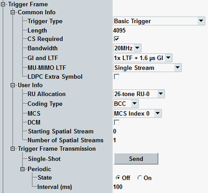

This section configures HE trigger frame. The parameters of "Common Info" and "User Info" fields are specified in IEEE 802.11ax, section 9.3.1.23 Trigger frame format.
Option R&S CMW-KS657 is required.

Specifies the trigger type as specified in the Common Info field.
- "Basic Trigger" carries any content.
- "Beamforming Report Poll" (BRP) solicits a beamforming report.
- "MU-RTS" solicits MU-CTS from multiple STAs.
- "Buffer Status Report Poll" (BSRP) solicits a buffer status report.
- "Bandwidth Query Report Poll" (BQRP) solicits a bandwidth query report.
Specifies the length of the HE trigger-based (TB) PPDU. HE TB PPDU is the HE PPDU that is the response to the trigger frame.
Remote command:If enabled, the STA must check the medium indication from CS mechanism before responding.
If disabled, specifies that the STA can respond without regard to the busy/idle state of the medium.
Remote command:Specifies the channel bandwidth of the HE TB PPDU.
Remote command:Specifies the guard interval and LTF type of the HE TB PPDU.
See also "Non-HT, HT, VHT, HE Frame".
Remote command:Selects one of the following MU-MIMO LTF modes:
- Single stream pilots
- Mask LTF sequence of each spatial stream by a distinct orthogonal code
Specifies the support of LDPC extra symbol segment.
Remote command:Specifies the RU used by the HE TB PPDU.
The setting x-tone RU-y means the number of data and pilot subcarriers for x and RU index for y. Refer to IEEE P802.11ax, tables 28-5 to 28-7.
Remote command:Specifies the coding used by the HE TB PPDU.
Remote command:Specifies the modulation and coding scheme (MCS) used by the HE TB PPDU.
Remote command:Specifies whether the HE TB response uses dual carrier modulation (DCM).
Remote command:Queries the starting spatial stream for the HE TB PPDU.
Remote command:Queries the number of HE TB PPDU spatial streams.
Remote command:Enables you to transmit the trigger frame once or periodically in a specified interval. Periodic trigger can be switched on and off.
Remote command: